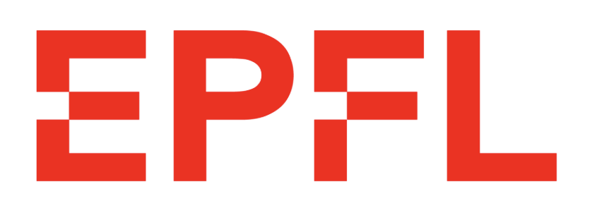
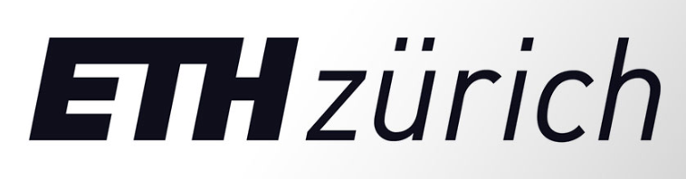
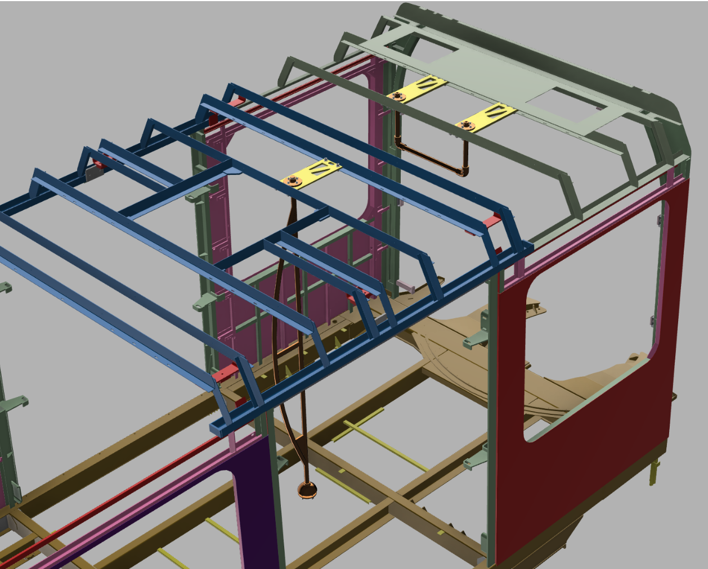
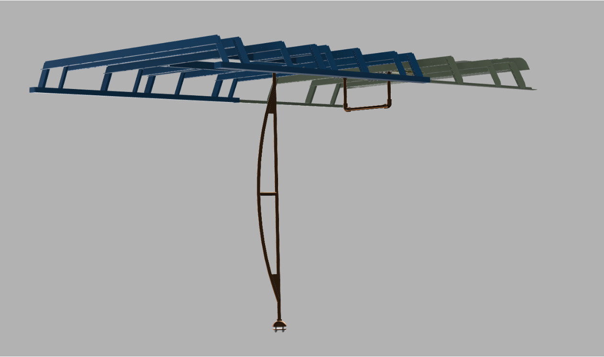
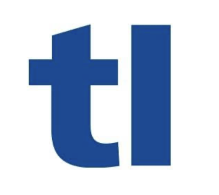
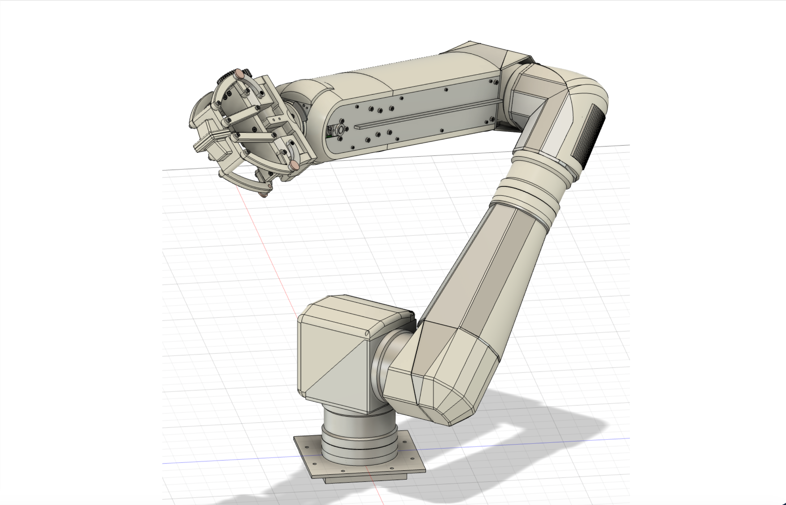
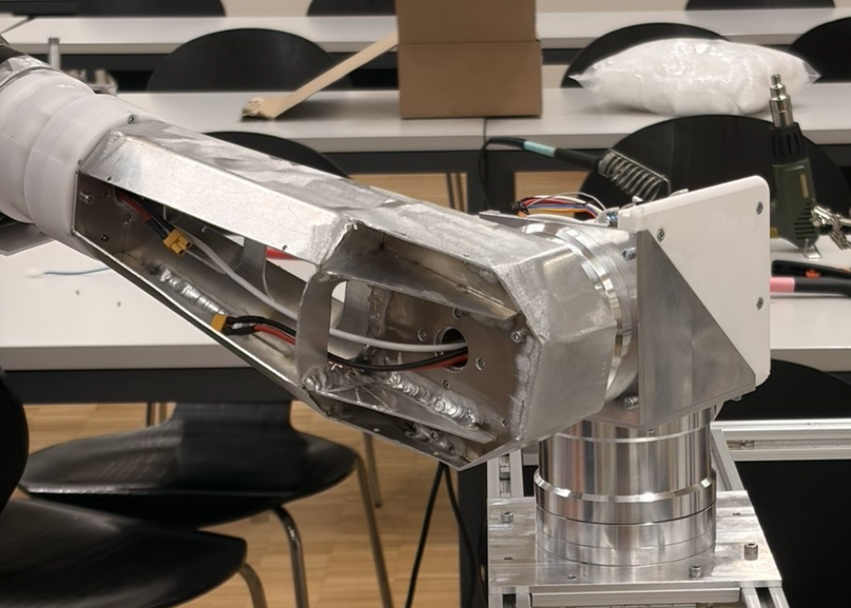
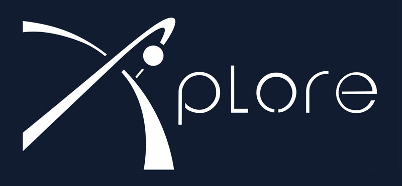
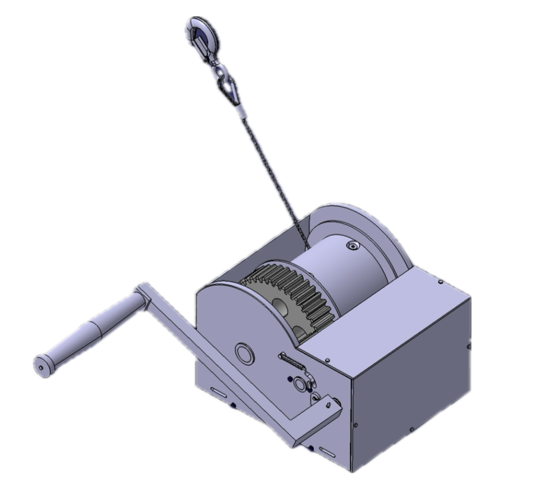
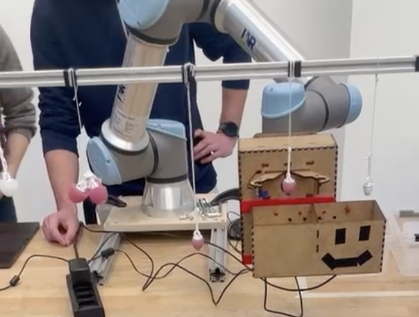

Structural design and system integration across railway and robotic systems — from concept to pre-industrial delivery, under real safety and regulatory constraints. Conception structurelle et intégration système dans les domaines ferroviaire et robotique — du concept au livrable pré-industriel, sous contraintes réelles de sécurité et de réglementation.








Mechanical engineering student at EPFL with hands-on experience delivering railway and robotic systems from concept to pre-industrial development. Focused on structural design and system integration under real manufacturing, safety, and regulatory constraints. Étudiant en génie mécanique à l'EPFL, avec une expérience concrète dans la livraison de systèmes ferroviaires et robotiques du concept au développement pré-industriel. Orienté conception structurelle et intégration système sous contraintes réelles.
Available from September 2026 for a gap year internship before starting an M.Sc. at ETH Zürich — targeting systems engineering, product development, or engineering consulting in high-reliability environments. Disponible dès septembre 2026 pour un stage de césure avant un MSc à l'ETH Zürich — visant l'ingénierie systèmes, le développement produit ou le conseil en ingénierie dans des environnements à haute fiabilité.
Competitive rugby at the highest French national youth level (Alamercery / Crabos), Normandy regional selection. Academic tutoring in mathematics and physics. Rugby de compétition au plus haut niveau national jeune en France (Alamercery / Crabos), sélection régionale de Normandie. Tutorat académique en mathématiques et physique.